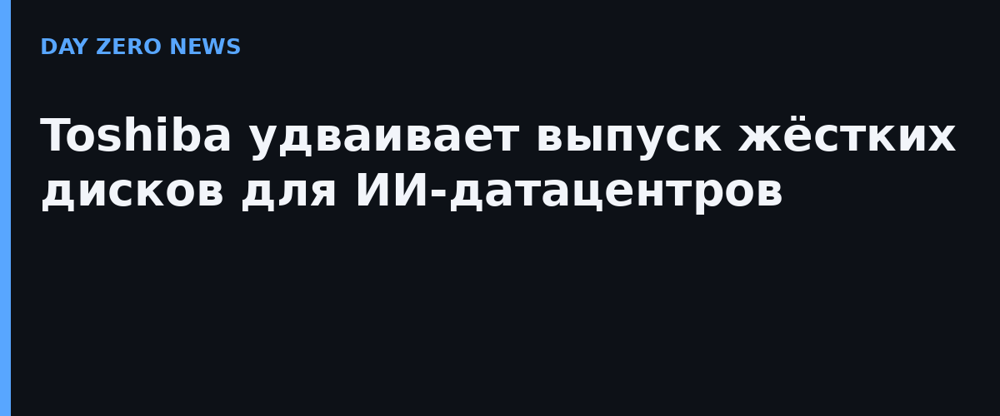

ИИ-гиганты продолжают скупать ускорители, но хранить обученные модели и сырые датасеты всё равно приходится на обычных жёстких дисках. Именно на это реагирует Toshiba: компания удваивает мощности по выпуску HDD для ИИ-датацентров в течение 2027 финансового года.
Под удвоение Toshiba заложил около 60 млрд йенов, что по текущему курсу соответствует примерно 2,55 млрд юаней. Средства пойдут на расширение завода на Филиппинах — это первое крупное инвестиционное решение компании в сегменте HDD примерно за пять лет. Вместе с новыми линиями Toshiba обещает поднять ёмкость одного диска максимум на 40% и автоматизировать проверку и работы в чистых помещениях, что сокращает потребность в персонале на 40% и повышает выход годного.
Рынок HDD сегодня поделён между Western Digital, Seagate и Toshiba. По суммарной ёмкости Toshiba занимает чуть больше 10% и в среднесрочной перспективе метит в 30%. Дальше по графику — серийный выпуск дисков уровня 65 ТБ к 2030 году и движение в сторону изделий на 100 ТБ.
Российский рынок движется в том же направлении: по оценке Аналитического центра при Правительстве РФ и Минцифры (октябрь 2025), энергопотребление дата-центров в России вырастет минимум в 2,5 раза к 2030 году. В июле 2025-го вступил закон о регулировании ЦОД и заработал госреестр дата-центров, а с августа 2026-го действует классификация ЦОД по уровню надёжности. Спрос на хранение и инфраструктуру у нас растёт вслед за мировым, вот только производство корпоративных жёстких дисков по-прежнему целиком сосредоточено за рубежом.
По материалам IT之家 (со ссылкой на Nikkei Asia).